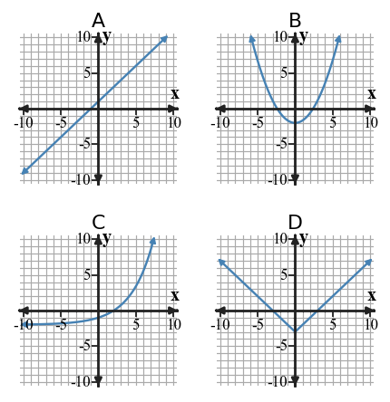

1.3 · Function Families
Function families are recognized by structures that repeat across equations, tables, graphs, and contexts.
Learning Target
Students will recognize common function families from graphs, tables, equations, and contexts.
- I can design examples of linear, quadratic, exponential, and absolute value relationships using more than one representation.
- I can extend patterns in tables, graphs, equations, and contexts to work with common function families.
- I can critique a proposed function family choice using evidence from rate of change, shape, or equation structure.
Vocabulary / Key Notation Preview
linear, quadratic, exponential, absolute value, function family
Sort the vocabulary. Write each vocabulary word in the column that best matches what you know right now. You may move a word later.
| Know for sure | Recognize | Don't know yet |
|---|---|---|
What's to Come

- Describe one visible feature of each graph.
- Which graph appears to have a constant rate of change?
- Which graph has a single lowest point and two straight arms?
- Match A-D to linear, quadratic, exponential, and absolute value, and state one piece of evidence for each match.
Let's Get Started
Skim the section. Record what catches your attention before you read closely.
| What I noticed | |
|---|---|
| What I predict | |
| What I wonder |
I can design examples of linear, quadratic, exponential, and absolute value relationships using more than one representation.
A function family is a group of relationships that share a recognizable structure. A linear relationship has a constant additive rate of change and a straight-line graph. Its equation often has the form $y=mx+b$.
A quadratic relationship often contains a squared variable such as $x^2$ and has a parabolic graph. An exponential relationship changes by repeated multiplication, so its equation places the variable in an exponent. An absolute value relationship uses a structure such as $|x-h|$ and commonly has a vertex with two straight arms.
Strong classification uses the feature that creates the family, not a memorized picture alone. When you design your own example, the equation, table, graph, and context should all preserve the same family-defining pattern.
- What table pattern is characteristic of a linear relationship with equal input steps?
- Where does the variable appear in a basic exponential equation?
- Why should a designed example preserve the same family clue in more than one representation?
Example 1: Classify Equations
Classify each equation by family: $y=3x-2$, $y=x^2+1$, $y=2^x$, and $y=|x|-4$. State the structural clue in each equation.
You Try It 1: Classify Equations
Classify $y=-2x+5$, $y=x^2-6$, $y=3(2^x)$, and $y=2|x+1|$ by family.
Example 2: Create Family Examples
Design one linear relationship and one absolute-value relationship. Give an equation and three matching points for each.
You Try It 2: Create Family Examples
Create an exponential example and a quadratic example. Give an equation and four outputs for inputs 0,1,2,3.
I can extend patterns in tables, graphs, equations, and contexts to work with common function families.
Tables make growth patterns especially visible when inputs change by equal steps. Constant first differences point to a linear pattern. If first differences change but second differences are constant, a quadratic pattern is likely. If outputs are repeatedly multiplied by the same factor, the pattern is exponential.
Extending a pattern means continuing the operation that defines it. For a linear table, add the same amount again. For an exponential table, multiply by the same factor again. For a quadratic table, track how the first differences themselves change.
A pattern should be checked against the context or equation when possible. Short tables can sometimes imitate more than one family for a few rows, so the goal is to use the strongest evidence available rather than a single superficial clue.
- What difference pattern suggests a quadratic relationship when inputs increase by 1?
- How do you extend an exponential table?
- Why can a short table require additional evidence before classification?
Example 3: Classify a Table
| x | y |
|---|---|
| 0 | 3 |
| 1 | 5 |
| 2 | 7 |
| 3 | 9 |
Classify the family and cite the table evidence.
You Try It 3: Classify a Table
| x | y |
|---|---|
| 0 | 2 |
| 1 | 6 |
| 2 | 18 |
| 3 | 54 |
Classify the family and cite the table evidence.
I can critique a proposed function family choice using evidence from rate of change, shape, or equation structure.
A classification claim is stronger when it uses at least two kinds of evidence. Equation structure can reveal a squared variable, exponent, or absolute-value symbol. Table behavior can reveal differences or ratios. A graph can show a line, parabola, curved growth/decay, or a vertex with two arms.
Context also matters. A quantity that is repeatedly multiplied by a percent factor is naturally exponential. Distance from a fixed point along a line is naturally modeled by absolute value because distance is nonnegative and changes direction at the reference point.
Be cautious with statements such as “it grows fast, so it is exponential.” Quadratic outputs can also grow quickly. Critique the claim by naming the specific feature that supports or contradicts the family choice.
- Why is “it grows quickly” not enough to prove a pattern is exponential?
- Name two different kinds of evidence that can support a family classification.
- What context feature makes repeated-percent growth naturally exponential?
Example 4: Compare Graphs

Compare the two graphs. Classify each family and name one feature that distinguishes them.
You Try It 4: Compare Graphs

Classify the graph and state one visible feature that supports your answer.
Example 5: Choose a Family from Context
A savings account balance is multiplied by 1.05 each year. Which family is a natural model, and what feature of the context supports that choice?
You Try It 5: Choose a Family from Context
The distance from a fixed point on a straight trail is modeled from a signed position. Which family naturally describes distance from that point?
Example 6: Critique a Family Claim
| x | y |
|---|---|
| 0 | 1 |
| 1 | 4 |
| 2 | 9 |
| 3 | 16 |
A student says the pattern is exponential because the outputs grow faster. Critique the claim using differences or ratios.
You Try It 6: Critique a Family Claim
| x | y |
|---|---|
| 0 | 2 |
| 1 | 5 |
| 2 | 10 |
| 3 | 17 |
A student calls this exponential. Critique the claim.
Summary
- Linear, quadratic, exponential, and absolute-value families have recognizable structures across representations.
- Use differences or ratios to extend table patterns and connect them to family behavior.
- Classify and critique using specific evidence; appearance or fast growth alone is not enough.
Common Mistakes
- Classifying a family from graph appearance alone without checking differences, ratios, or equation structure.
- Confusing quadratic growth with exponential growth.